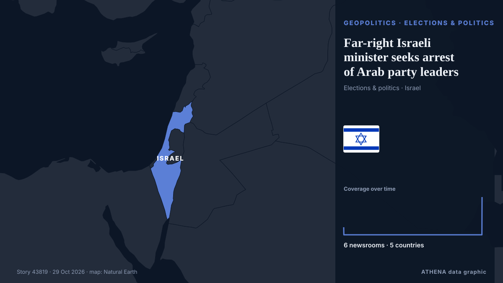

Far-right Israeli minister seeks arrest of Arab party leaders 
Carte : Israel, élections. 6 médias dans 5 pays Israel’s national security minister called for the arrest of Arab party leaders over unproven foreign funding accusations. de Arab News
En bref Relayé de façon indépendante par 6 médias dans 5 pays depuis le 5 août ; premier à l'annoncer : CBC News (alternative feed) ; la couverture faiblit. ATHENA juge le risque faible (0.9/10), surtout en raison de la gravité des dommages décrits et de la qualité des preuves. La confiance est de 79 % (élevée) : 6 médias indépendants le confirment, avec une fiabilité moyenne des sources de 74 %.
Pourquoi c'est important: Les évolutions de sécurité et de diplomatie peuvent déplacer alliances, échanges et marchés bien au-delà des pays directement concernés.
Ce qui a changé : 4 nouveaux articles de 4 rédactions dans les 24 heures jusqu'au 29 oct..
ATHENA News Room · analyse automatique de 6 articles venant de 5 pays Première apparition 05 Aug 2020, 22:37 UTC Mis à jour 29 Oct 2026, 09:17 UTC
Les titres sont affichés en anglais, tels que publiés.
En un coup d'œil 3.9 Importance
0.9 Risque · faible
79% Confiance
Notre méthode de notation ›
Sélectionné, noté et rédigé par la méthodologie publiée d'ATHENA. Aucun rédacteur n'intervient sur un événement en particulier. Comment il est produit ›
pic 5 05 Aug 22:37 UTC 27 Oct 22:37 UTC 05 Aug 22:37 UTC · 1 article 07 Aug 22:37 UTC · 0 article 09 Aug 22:37 UTC · 0 article 11 Aug 22:37 UTC · 0 article 13 Aug 22:37 UTC · 0 article 15 Aug 22:37 UTC · 0 article 17 Aug 22:37 UTC · 0 article 19 Aug 22:37 UTC · 0 article 21 Aug 22:37 UTC · 0 article 23 Aug 22:37 UTC · 0 article 25 Aug 22:37 UTC · 0 article 27 Aug 22:37 UTC · 0 article 29 Aug 22:37 UTC · 0 article 31 Aug 22:37 UTC · 0 article 02 Sep 22:37 UTC · 0 article 04 Sep 22:37 UTC · 0 article 06 Sep 22:37 UTC · 0 article 08 Sep 22:37 UTC · 0 article 10 Sep 22:37 UTC · 0 article 12 Sep 22:37 UTC · 0 article 14 Sep 22:37 UTC · 0 article 16 Sep 22:37 UTC · 0 article 18 Sep 22:37 UTC · 0 article 20 Sep 22:37 UTC · 0 article 22 Sep 22:37 UTC · 0 article 24 Sep 22:37 UTC · 0 article 26 Sep 22:37 UTC · 0 article 28 Sep 22:37 UTC · 0 article 30 Sep 22:37 UTC · 0 article 02 Oct 22:37 UTC · 0 article 04 Oct 22:37 UTC · 0 article 06 Oct 22:37 UTC · 0 article 08 Oct 22:37 UTC · 0 article 10 Oct 22:37 UTC · 0 article 12 Oct 22:37 UTC · 0 article 14 Oct 22:37 UTC · 0 article 16 Oct 22:37 UTC · 0 article 18 Oct 22:37 UTC · 0 article 20 Oct 22:37 UTC · 0 article 22 Oct 22:37 UTC · 0 article 24 Oct 22:37 UTC · 0 article 26 Oct 22:37 UTC · 0 article 28 Oct 22:37 UTC · 0 article 30 Oct 22:37 UTC · 0 article 01 Nov 22:37 UTC · 0 article 03 Nov 22:37 UTC · 0 article 05 Nov 22:37 UTC · 0 article 07 Nov 22:37 UTC · 0 article 09 Nov 22:37 UTC · 0 article 11 Nov 22:37 UTC · 0 article 13 Nov 22:37 UTC · 0 article 15 Nov 22:37 UTC · 0 article 17 Nov 22:37 UTC · 0 article 19 Nov 22:37 UTC · 0 article 21 Nov 22:37 UTC · 0 article 23 Nov 22:37 UTC · 0 article 25 Nov 22:37 UTC · 0 article 27 Nov 22:37 UTC · 0 article 29 Nov 22:37 UTC · 0 article 01 Dec 22:37 UTC · 0 article 03 Dec 22:37 UTC · 0 article 05 Dec 22:37 UTC · 0 article 07 Dec 22:37 UTC · 0 article 09 Dec 22:37 UTC · 0 article 11 Dec 22:37 UTC · 0 article 13 Dec 22:37 UTC · 0 article 15 Dec 22:37 UTC · 0 article 17 Dec 22:37 UTC · 0 article 19 Dec 22:37 UTC · 0 article 21 Dec 22:37 UTC · 0 article 23 Dec 22:37 UTC · 0 article 25 Dec 22:37 UTC · 0 article 27 Dec 22:37 UTC · 0 article 29 Dec 22:37 UTC · 0 article 31 Dec 22:37 UTC · 0 article 02 Jan 22:37 UTC · 0 article 04 Jan 22:37 UTC · 0 article 06 Jan 22:37 UTC · 0 article 08 Jan 22:37 UTC · 0 article 10 Jan 22:37 UTC · 0 article 12 Jan 22:37 UTC · 0 article 14 Jan 22:37 UTC · 0 article 16 Jan 22:37 UTC · 0 article 18 Jan 22:37 UTC · 0 article 20 Jan 22:37 UTC · 0 article 22 Jan 22:37 UTC · 0 article 24 Jan 22:37 UTC · 0 article 26 Jan 22:37 UTC · 0 article 28 Jan 22:37 UTC · 0 article 30 Jan 22:37 UTC · 0 article 01 Feb 22:37 UTC · 0 article 03 Feb 22:37 UTC · 0 article 05 Feb 22:37 UTC · 0 article 07 Feb 22:37 UTC · 0 article 09 Feb 22:37 UTC · 0 article 11 Feb 22:37 UTC · 0 article 13 Feb 22:37 UTC · 0 article 15 Feb 22:37 UTC · 0 article 17 Feb 22:37 UTC · 0 article 19 Feb 22:37 UTC · 0 article 21 Feb 22:37 UTC · 0 article 23 Feb 22:37 UTC · 0 article 25 Feb 22:37 UTC · 0 article 27 Feb 22:37 UTC · 0 article 01 Mar 22:37 UTC · 0 article 03 Mar 22:37 UTC · 0 article 05 Mar 22:37 UTC · 0 article 07 Mar 22:37 UTC · 0 article 09 Mar 22:37 UTC · 0 article 11 Mar 22:37 UTC · 0 article 13 Mar 22:37 UTC · 0 article 15 Mar 22:37 UTC · 0 article 17 Mar 22:37 UTC · 0 article 19 Mar 22:37 UTC · 0 article 21 Mar 22:37 UTC · 0 article 23 Mar 22:37 UTC · 0 article 25 Mar 22:37 UTC · 0 article 27 Mar 22:37 UTC · 0 article 29 Mar 22:37 UTC · 0 article 31 Mar 22:37 UTC · 0 article 02 Apr 22:37 UTC · 0 article 04 Apr 22:37 UTC · 0 article 06 Apr 22:37 UTC · 0 article 08 Apr 22:37 UTC · 0 article 10 Apr 22:37 UTC · 0 article 12 Apr 22:37 UTC · 0 article 14 Apr 22:37 UTC · 0 article 16 Apr 22:37 UTC · 0 article 18 Apr 22:37 UTC · 0 article 20 Apr 22:37 UTC · 0 article 22 Apr 22:37 UTC · 0 article 24 Apr 22:37 UTC · 0 article 26 Apr 22:37 UTC · 0 article 28 Apr 22:37 UTC · 0 article 30 Apr 22:37 UTC · 0 article 02 May 22:37 UTC · 0 article 04 May 22:37 UTC · 0 article 06 May 22:37 UTC · 0 article 08 May 22:37 UTC · 0 article 10 May 22:37 UTC · 0 article 12 May 22:37 UTC · 0 article 14 May 22:37 UTC · 0 article 16 May 22:37 UTC · 0 article 18 May 22:37 UTC · 0 article 20 May 22:37 UTC · 0 article 22 May 22:37 UTC · 0 article 24 May 22:37 UTC · 0 article 26 May 22:37 UTC · 0 article 28 May 22:37 UTC · 0 article 30 May 22:37 UTC · 0 article 01 Jun 22:37 UTC · 0 article 03 Jun 22:37 UTC · 0 article 05 Jun 22:37 UTC · 0 article 07 Jun 22:37 UTC · 0 article 09 Jun 22:37 UTC · 0 article 11 Jun 22:37 UTC · 0 article 13 Jun 22:37 UTC · 0 article 15 Jun 22:37 UTC · 0 article 17 Jun 22:37 UTC · 0 article 19 Jun 22:37 UTC · 0 article 21 Jun 22:37 UTC · 0 article 23 Jun 22:37 UTC · 0 article 25 Jun 22:37 UTC · 0 article 27 Jun 22:37 UTC · 0 article 29 Jun 22:37 UTC · 0 article 01 Jul 22:37 UTC · 0 article 03 Jul 22:37 UTC · 0 article 05 Jul 22:37 UTC · 0 article 07 Jul 22:37 UTC · 0 article 09 Jul 22:37 UTC · 0 article 11 Jul 22:37 UTC · 0 article 13 Jul 22:37 UTC · 0 article 15 Jul 22:37 UTC · 0 article 17 Jul 22:37 UTC · 0 article 19 Jul 22:37 UTC · 0 article 21 Jul 22:37 UTC · 0 article 23 Jul 22:37 UTC · 0 article 25 Jul 22:37 UTC · 0 article 27 Jul 22:37 UTC · 0 article 29 Jul 22:37 UTC · 0 article 31 Jul 22:37 UTC · 0 article 02 Aug 22:37 UTC · 0 article 04 Aug 22:37 UTC · 0 article 06 Aug 22:37 UTC · 0 article 08 Aug 22:37 UTC · 0 article 10 Aug 22:37 UTC · 0 article 12 Aug 22:37 UTC · 0 article 14 Aug 22:37 UTC · 0 article 16 Aug 22:37 UTC · 0 article 18 Aug 22:37 UTC · 0 article 20 Aug 22:37 UTC · 0 article 22 Aug 22:37 UTC · 0 article 24 Aug 22:37 UTC · 0 article 26 Aug 22:37 UTC · 0 article 28 Aug 22:37 UTC · 0 article 30 Aug 22:37 UTC · 0 article 01 Sep 22:37 UTC · 0 article 03 Sep 22:37 UTC · 0 article 05 Sep 22:37 UTC · 0 article 07 Sep 22:37 UTC · 0 article 09 Sep 22:37 UTC · 0 article 11 Sep 22:37 UTC · 0 article 13 Sep 22:37 UTC · 0 article 15 Sep 22:37 UTC · 0 article 17 Sep 22:37 UTC · 0 article 19 Sep 22:37 UTC · 0 article 21 Sep 22:37 UTC · 0 article 23 Sep 22:37 UTC · 0 article 25 Sep 22:37 UTC · 0 article 27 Sep 22:37 UTC · 0 article 29 Sep 22:37 UTC · 0 article 01 Oct 22:37 UTC · 0 article 03 Oct 22:37 UTC · 0 article 05 Oct 22:37 UTC · 0 article 07 Oct 22:37 UTC · 0 article 09 Oct 22:37 UTC · 0 article 11 Oct 22:37 UTC · 0 article 13 Oct 22:37 UTC · 0 article 15 Oct 22:37 UTC · 0 article 17 Oct 22:37 UTC · 0 article 19 Oct 22:37 UTC · 0 article 21 Oct 22:37 UTC · 0 article 23 Oct 22:37 UTC · 0 article 25 Oct 22:37 UTC · 0 article 27 Oct 22:37 UTC · 0 article 29 Oct 22:37 UTC · 0 article 31 Oct 22:37 UTC · 0 article 02 Nov 22:37 UTC · 0 article 04 Nov 22:37 UTC · 0 article 06 Nov 22:37 UTC · 0 article 08 Nov 22:37 UTC · 0 article 10 Nov 22:37 UTC · 0 article 12 Nov 22:37 UTC · 0 article 14 Nov 22:37 UTC · 0 article 16 Nov 22:37 UTC · 0 article 18 Nov 22:37 UTC · 0 article 20 Nov 22:37 UTC · 0 article 22 Nov 22:37 UTC · 0 article 24 Nov 22:37 UTC · 0 article 26 Nov 22:37 UTC · 0 article 28 Nov 22:37 UTC · 0 article 30 Nov 22:37 UTC · 0 article 02 Dec 22:37 UTC · 0 article 04 Dec 22:37 UTC · 0 article 06 Dec 22:37 UTC · 0 article 08 Dec 22:37 UTC · 0 article 10 Dec 22:37 UTC · 0 article 12 Dec 22:37 UTC · 0 article 14 Dec 22:37 UTC · 0 article 16 Dec 22:37 UTC · 0 article 18 Dec 22:37 UTC · 0 article 20 Dec 22:37 UTC · 0 article 22 Dec 22:37 UTC · 0 article 24 Dec 22:37 UTC · 0 article 26 Dec 22:37 UTC · 0 article 28 Dec 22:37 UTC · 0 article 30 Dec 22:37 UTC · 0 article 01 Jan 22:37 UTC · 0 article 03 Jan 22:37 UTC · 0 article 05 Jan 22:37 UTC · 0 article 07 Jan 22:37 UTC · 0 article 09 Jan 22:37 UTC · 0 article 11 Jan 22:37 UTC · 0 article 13 Jan 22:37 UTC · 0 article 15 Jan 22:37 UTC · 0 article 17 Jan 22:37 UTC · 0 article 19 Jan 22:37 UTC · 0 article 21 Jan 22:37 UTC · 0 article 23 Jan 22:37 UTC · 0 article 25 Jan 22:37 UTC · 0 article 27 Jan 22:37 UTC · 0 article 29 Jan 22:37 UTC · 0 article 31 Jan 22:37 UTC · 0 article 02 Feb 22:37 UTC · 0 article 04 Feb 22:37 UTC · 0 article 06 Feb 22:37 UTC · 0 article 08 Feb 22:37 UTC · 0 article 10 Feb 22:37 UTC · 0 article 12 Feb 22:37 UTC · 0 article 14 Feb 22:37 UTC · 0 article 16 Feb 22:37 UTC · 0 article 18 Feb 22:37 UTC · 0 article 20 Feb 22:37 UTC · 0 article 22 Feb 22:37 UTC · 0 article 24 Feb 22:37 UTC · 0 article 26 Feb 22:37 UTC · 0 article 28 Feb 22:37 UTC · 0 article 02 Mar 22:37 UTC · 0 article 04 Mar 22:37 UTC · 0 article 06 Mar 22:37 UTC · 0 article 08 Mar 22:37 UTC · 0 article 10 Mar 22:37 UTC · 0 article 12 Mar 22:37 UTC · 0 article 14 Mar 22:37 UTC · 0 article 16 Mar 22:37 UTC · 0 article 18 Mar 22:37 UTC · 0 article 20 Mar 22:37 UTC · 0 article 22 Mar 22:37 UTC · 0 article 24 Mar 22:37 UTC · 0 article 26 Mar 22:37 UTC · 0 article 28 Mar 22:37 UTC · 0 article 30 Mar 22:37 UTC · 0 article 01 Apr 22:37 UTC · 0 article 03 Apr 22:37 UTC · 0 article 05 Apr 22:37 UTC · 0 article 07 Apr 22:37 UTC · 0 article 09 Apr 22:37 UTC · 0 article 11 Apr 22:37 UTC · 0 article 13 Apr 22:37 UTC · 0 article 15 Apr 22:37 UTC · 0 article 17 Apr 22:37 UTC · 0 article 19 Apr 22:37 UTC · 0 article 21 Apr 22:37 UTC · 0 article 23 Apr 22:37 UTC · 0 article 25 Apr 22:37 UTC · 0 article 27 Apr 22:37 UTC · 0 article 29 Apr 22:37 UTC · 0 article 01 May 22:37 UTC · 0 article 03 May 22:37 UTC · 0 article 05 May 22:37 UTC · 0 article 07 May 22:37 UTC · 0 article 09 May 22:37 UTC · 0 article 11 May 22:37 UTC · 0 article 13 May 22:37 UTC · 0 article 15 May 22:37 UTC · 0 article 17 May 22:37 UTC · 0 article 19 May 22:37 UTC · 0 article 21 May 22:37 UTC · 0 article 23 May 22:37 UTC · 0 article 25 May 22:37 UTC · 0 article 27 May 22:37 UTC · 0 article 29 May 22:37 UTC · 0 article 31 May 22:37 UTC · 0 article 02 Jun 22:37 UTC · 0 article 04 Jun 22:37 UTC · 0 article 06 Jun 22:37 UTC · 0 article 08 Jun 22:37 UTC · 0 article 10 Jun 22:37 UTC · 0 article 12 Jun 22:37 UTC · 0 article 14 Jun 22:37 UTC · 0 article 16 Jun 22:37 UTC · 0 article 18 Jun 22:37 UTC · 0 article 20 Jun 22:37 UTC · 0 article 22 Jun 22:37 UTC · 0 article 24 Jun 22:37 UTC · 0 article 26 Jun 22:37 UTC · 0 article 28 Jun 22:37 UTC · 0 article 30 Jun 22:37 UTC · 0 article 02 Jul 22:37 UTC · 0 article 04 Jul 22:37 UTC · 0 article 06 Jul 22:37 UTC · 0 article 08 Jul 22:37 UTC · 0 article 10 Jul 22:37 UTC · 0 article 12 Jul 22:37 UTC · 0 article 14 Jul 22:37 UTC · 0 article 16 Jul 22:37 UTC · 0 article 18 Jul 22:37 UTC · 0 article 20 Jul 22:37 UTC · 0 article 22 Jul 22:37 UTC · 0 article 24 Jul 22:37 UTC · 0 article 26 Jul 22:37 UTC · 0 article 28 Jul 22:37 UTC · 0 article 30 Jul 22:37 UTC · 0 article 01 Aug 22:37 UTC · 0 article 03 Aug 22:37 UTC · 0 article 05 Aug 22:37 UTC · 0 article 07 Aug 22:37 UTC · 0 article 09 Aug 22:37 UTC · 0 article 11 Aug 22:37 UTC · 0 article 13 Aug 22:37 UTC · 0 article 15 Aug 22:37 UTC · 0 article 17 Aug 22:37 UTC · 0 article 19 Aug 22:37 UTC · 0 article 21 Aug 22:37 UTC · 0 article 23 Aug 22:37 UTC · 0 article 25 Aug 22:37 UTC · 0 article 27 Aug 22:37 UTC · 0 article 29 Aug 22:37 UTC · 0 article 31 Aug 22:37 UTC · 0 article 02 Sep 22:37 UTC · 0 article 04 Sep 22:37 UTC · 0 article 06 Sep 22:37 UTC · 0 article 08 Sep 22:37 UTC · 0 article 10 Sep 22:37 UTC · 0 article 12 Sep 22:37 UTC · 0 article 14 Sep 22:37 UTC · 0 article 16 Sep 22:37 UTC · 0 article 18 Sep 22:37 UTC · 0 article 20 Sep 22:37 UTC · 0 article 22 Sep 22:37 UTC · 0 article 24 Sep 22:37 UTC · 0 article 26 Sep 22:37 UTC · 0 article 28 Sep 22:37 UTC · 0 article 30 Sep 22:37 UTC · 0 article 02 Oct 22:37 UTC · 0 article 04 Oct 22:37 UTC · 0 article 06 Oct 22:37 UTC · 0 article 08 Oct 22:37 UTC · 0 article 10 Oct 22:37 UTC · 0 article 12 Oct 22:37 UTC · 0 article 14 Oct 22:37 UTC · 0 article 16 Oct 22:37 UTC · 0 article 18 Oct 22:37 UTC · 0 article 20 Oct 22:37 UTC · 0 article 22 Oct 22:37 UTC · 0 article 24 Oct 22:37 UTC · 0 article 26 Oct 22:37 UTC · 0 article 28 Oct 22:37 UTC · 0 article 30 Oct 22:37 UTC · 0 article 01 Nov 22:37 UTC · 0 article 03 Nov 22:37 UTC · 0 article 05 Nov 22:37 UTC · 0 article 07 Nov 22:37 UTC · 0 article 09 Nov 22:37 UTC · 0 article 11 Nov 22:37 UTC · 0 article 13 Nov 22:37 UTC · 0 article 15 Nov 22:37 UTC · 0 article 17 Nov 22:37 UTC · 0 article 19 Nov 22:37 UTC · 0 article 21 Nov 22:37 UTC · 0 article 23 Nov 22:37 UTC · 0 article 25 Nov 22:37 UTC · 0 article 27 Nov 22:37 UTC · 0 article 29 Nov 22:37 UTC · 0 article 01 Dec 22:37 UTC · 0 article 03 Dec 22:37 UTC · 0 article 05 Dec 22:37 UTC · 0 article 07 Dec 22:37 UTC · 0 article 09 Dec 22:37 UTC · 0 article 11 Dec 22:37 UTC · 0 article 13 Dec 22:37 UTC · 0 article 15 Dec 22:37 UTC · 0 article 17 Dec 22:37 UTC · 0 article 19 Dec 22:37 UTC · 0 article 21 Dec 22:37 UTC · 0 article 23 Dec 22:37 UTC · 0 article 25 Dec 22:37 UTC · 0 article 27 Dec 22:37 UTC · 0 article 29 Dec 22:37 UTC · 0 article 31 Dec 22:37 UTC · 0 article 02 Jan 22:37 UTC · 0 article 04 Jan 22:37 UTC · 0 article 06 Jan 22:37 UTC · 0 article 08 Jan 22:37 UTC · 0 article 10 Jan 22:37 UTC · 0 article 12 Jan 22:37 UTC · 0 article 14 Jan 22:37 UTC · 0 article 16 Jan 22:37 UTC · 0 article 18 Jan 22:37 UTC · 0 article 20 Jan 22:37 UTC · 0 article 22 Jan 22:37 UTC · 0 article 24 Jan 22:37 UTC · 0 article 26 Jan 22:37 UTC · 0 article 28 Jan 22:37 UTC · 0 article 30 Jan 22:37 UTC · 0 article 01 Feb 22:37 UTC · 0 article 03 Feb 22:37 UTC · 0 article 05 Feb 22:37 UTC · 0 article 07 Feb 22:37 UTC · 0 article 09 Feb 22:37 UTC · 0 article 11 Feb 22:37 UTC · 0 article 13 Feb 22:37 UTC · 0 article 15 Feb 22:37 UTC · 0 article 17 Feb 22:37 UTC · 0 article 19 Feb 22:37 UTC · 0 article 21 Feb 22:37 UTC · 0 article 23 Feb 22:37 UTC · 0 article 25 Feb 22:37 UTC · 0 article 27 Feb 22:37 UTC · 0 article 01 Mar 22:37 UTC · 0 article 03 Mar 22:37 UTC · 0 article 05 Mar 22:37 UTC · 0 article 07 Mar 22:37 UTC · 0 article 09 Mar 22:37 UTC · 0 article 11 Mar 22:37 UTC · 0 article 13 Mar 22:37 UTC · 0 article 15 Mar 22:37 UTC · 0 article 17 Mar 22:37 UTC · 0 article 19 Mar 22:37 UTC · 0 article 21 Mar 22:37 UTC · 0 article 23 Mar 22:37 UTC · 0 article 25 Mar 22:37 UTC · 0 article 27 Mar 22:37 UTC · 0 article 29 Mar 22:37 UTC · 0 article 31 Mar 22:37 UTC · 0 article 02 Apr 22:37 UTC · 0 article 04 Apr 22:37 UTC · 0 article 06 Apr 22:37 UTC · 0 article 08 Apr 22:37 UTC · 0 article 10 Apr 22:37 UTC · 0 article 12 Apr 22:37 UTC · 0 article 14 Apr 22:37 UTC · 0 article 16 Apr 22:37 UTC · 0 article 18 Apr 22:37 UTC · 0 article 20 Apr 22:37 UTC · 0 article 22 Apr 22:37 UTC · 0 article 24 Apr 22:37 UTC · 0 article 26 Apr 22:37 UTC · 0 article 28 Apr 22:37 UTC · 0 article 30 Apr 22:37 UTC · 0 article 02 May 22:37 UTC · 0 article 04 May 22:37 UTC · 0 article 06 May 22:37 UTC · 0 article 08 May 22:37 UTC · 0 article 10 May 22:37 UTC · 0 article 12 May 22:37 UTC · 0 article 14 May 22:37 UTC · 0 article 16 May 22:37 UTC · 0 article 18 May 22:37 UTC · 0 article 20 May 22:37 UTC · 0 article 22 May 22:37 UTC · 0 article 24 May 22:37 UTC · 0 article 26 May 22:37 UTC · 0 article 28 May 22:37 UTC · 0 article 30 May 22:37 UTC · 0 article 01 Jun 22:37 UTC · 0 article 03 Jun 22:37 UTC · 0 article 05 Jun 22:37 UTC · 0 article 07 Jun 22:37 UTC · 0 article 09 Jun 22:37 UTC · 0 article 11 Jun 22:37 UTC · 0 article 13 Jun 22:37 UTC · 0 article 15 Jun 22:37 UTC · 0 article 17 Jun 22:37 UTC · 0 article 19 Jun 22:37 UTC · 0 article 21 Jun 22:37 UTC · 0 article 23 Jun 22:37 UTC · 0 article 25 Jun 22:37 UTC · 0 article 27 Jun 22:37 UTC · 0 article 29 Jun 22:37 UTC · 0 article 01 Jul 22:37 UTC · 0 article 03 Jul 22:37 UTC · 0 article 05 Jul 22:37 UTC · 0 article 07 Jul 22:37 UTC · 0 article 09 Jul 22:37 UTC · 0 article 11 Jul 22:37 UTC · 0 article 13 Jul 22:37 UTC · 0 article 15 Jul 22:37 UTC · 0 article 17 Jul 22:37 UTC · 0 article 19 Jul 22:37 UTC · 0 article 21 Jul 22:37 UTC · 0 article 23 Jul 22:37 UTC · 0 article 25 Jul 22:37 UTC · 0 article 27 Jul 22:37 UTC · 0 article 29 Jul 22:37 UTC · 0 article 31 Jul 22:37 UTC · 0 article 02 Aug 22:37 UTC · 0 article 04 Aug 22:37 UTC · 0 article 06 Aug 22:37 UTC · 0 article 08 Aug 22:37 UTC · 0 article 10 Aug 22:37 UTC · 0 article 12 Aug 22:37 UTC · 0 article 14 Aug 22:37 UTC · 0 article 16 Aug 22:37 UTC · 0 article 18 Aug 22:37 UTC · 0 article 20 Aug 22:37 UTC · 0 article 22 Aug 22:37 UTC · 0 article 24 Aug 22:37 UTC · 0 article 26 Aug 22:37 UTC · 0 article 28 Aug 22:37 UTC · 0 article 30 Aug 22:37 UTC · 0 article 01 Sep 22:37 UTC · 0 article 03 Sep 22:37 UTC · 0 article 05 Sep 22:37 UTC · 0 article 07 Sep 22:37 UTC · 0 article 09 Sep 22:37 UTC · 0 article 11 Sep 22:37 UTC · 0 article 13 Sep 22:37 UTC · 0 article 15 Sep 22:37 UTC · 0 article 17 Sep 22:37 UTC · 0 article 19 Sep 22:37 UTC · 0 article 21 Sep 22:37 UTC · 0 article 23 Sep 22:37 UTC · 0 article 25 Sep 22:37 UTC · 0 article 27 Sep 22:37 UTC · 0 article 29 Sep 22:37 UTC · 0 article 01 Oct 22:37 UTC · 0 article 03 Oct 22:37 UTC · 0 article 05 Oct 22:37 UTC · 0 article 07 Oct 22:37 UTC · 0 article 09 Oct 22:37 UTC · 0 article 11 Oct 22:37 UTC · 0 article 13 Oct 22:37 UTC · 0 article 15 Oct 22:37 UTC · 0 article 17 Oct 22:37 UTC · 0 article 19 Oct 22:37 UTC · 0 article 21 Oct 22:37 UTC · 0 article 23 Oct 22:37 UTC · 0 article 25 Oct 22:37 UTC · 0 article 27 Oct 22:37 UTC · 0 article 29 Oct 22:37 UTC · 0 article 31 Oct 22:37 UTC · 0 article 02 Nov 22:37 UTC · 0 article 04 Nov 22:37 UTC · 0 article 06 Nov 22:37 UTC · 0 article 08 Nov 22:37 UTC · 0 article 10 Nov 22:37 UTC · 0 article 12 Nov 22:37 UTC · 0 article 14 Nov 22:37 UTC · 0 article 16 Nov 22:37 UTC · 0 article 18 Nov 22:37 UTC · 0 article 20 Nov 22:37 UTC · 0 article 22 Nov 22:37 UTC · 0 article 24 Nov 22:37 UTC · 0 article 26 Nov 22:37 UTC · 0 article 28 Nov 22:37 UTC · 0 article 30 Nov 22:37 UTC · 0 article 02 Dec 22:37 UTC · 0 article 04 Dec 22:37 UTC · 0 article 06 Dec 22:37 UTC · 0 article 08 Dec 22:37 UTC · 0 article 10 Dec 22:37 UTC · 0 article 12 Dec 22:37 UTC · 0 article 14 Dec 22:37 UTC · 0 article 16 Dec 22:37 UTC · 0 article 18 Dec 22:37 UTC · 0 article 20 Dec 22:37 UTC · 0 article 22 Dec 22:37 UTC · 0 article 24 Dec 22:37 UTC · 0 article 26 Dec 22:37 UTC · 0 article 28 Dec 22:37 UTC · 0 article 30 Dec 22:37 UTC · 0 article 01 Jan 22:37 UTC · 0 article 03 Jan 22:37 UTC · 0 article 05 Jan 22:37 UTC · 0 article 07 Jan 22:37 UTC · 0 article 09 Jan 22:37 UTC · 0 article 11 Jan 22:37 UTC · 0 article 13 Jan 22:37 UTC · 0 article 15 Jan 22:37 UTC · 0 article 17 Jan 22:37 UTC · 0 article 19 Jan 22:37 UTC · 0 article 21 Jan 22:37 UTC · 0 article 23 Jan 22:37 UTC · 0 article 25 Jan 22:37 UTC · 0 article 27 Jan 22:37 UTC · 0 article 29 Jan 22:37 UTC · 0 article 31 Jan 22:37 UTC · 0 article 02 Feb 22:37 UTC · 0 article 04 Feb 22:37 UTC · 0 article 06 Feb 22:37 UTC · 0 article 08 Feb 22:37 UTC · 0 article 10 Feb 22:37 UTC · 0 article 12 Feb 22:37 UTC · 0 article 14 Feb 22:37 UTC · 0 article 16 Feb 22:37 UTC · 0 article 18 Feb 22:37 UTC · 0 article 20 Feb 22:37 UTC · 0 article 22 Feb 22:37 UTC · 0 article 24 Feb 22:37 UTC · 0 article 26 Feb 22:37 UTC · 0 article 28 Feb 22:37 UTC · 0 article 01 Mar 22:37 UTC · 0 article 03 Mar 22:37 UTC · 0 article 05 Mar 22:37 UTC · 0 article 07 Mar 22:37 UTC · 0 article 09 Mar 22:37 UTC · 0 article 11 Mar 22:37 UTC · 0 article 13 Mar 22:37 UTC · 0 article 15 Mar 22:37 UTC · 0 article 17 Mar 22:37 UTC · 0 article 19 Mar 22:37 UTC · 0 article 21 Mar 22:37 UTC · 0 article 23 Mar 22:37 UTC · 0 article 25 Mar 22:37 UTC · 0 article 27 Mar 22:37 UTC · 0 article 29 Mar 22:37 UTC · 0 article 31 Mar 22:37 UTC · 0 article 02 Apr 22:37 UTC · 0 article 04 Apr 22:37 UTC · 0 article 06 Apr 22:37 UTC · 0 article 08 Apr 22:37 UTC · 0 article 10 Apr 22:37 UTC · 0 article 12 Apr 22:37 UTC · 0 article 14 Apr 22:37 UTC · 0 article 16 Apr 22:37 UTC · 0 article 18 Apr 22:37 UTC · 0 article 20 Apr 22:37 UTC · 0 article 22 Apr 22:37 UTC · 0 article 24 Apr 22:37 UTC · 0 article 26 Apr 22:37 UTC · 0 article 28 Apr 22:37 UTC · 0 article 30 Apr 22:37 UTC · 0 article 02 May 22:37 UTC · 0 article 04 May 22:37 UTC · 0 article 06 May 22:37 UTC · 0 article 08 May 22:37 UTC · 0 article 10 May 22:37 UTC · 0 article 12 May 22:37 UTC · 0 article 14 May 22:37 UTC · 0 article 16 May 22:37 UTC · 0 article 18 May 22:37 UTC · 0 article 20 May 22:37 UTC · 0 article 22 May 22:37 UTC · 0 article 24 May 22:37 UTC · 0 article 26 May 22:37 UTC · 0 article 28 May 22:37 UTC · 0 article 30 May 22:37 UTC · 0 article 01 Jun 22:37 UTC · 0 article 03 Jun 22:37 UTC · 0 article 05 Jun 22:37 UTC · 0 article 07 Jun 22:37 UTC · 0 article 09 Jun 22:37 UTC · 0 article 11 Jun 22:37 UTC · 0 article 13 Jun 22:37 UTC · 0 article 15 Jun 22:37 UTC · 0 article 17 Jun 22:37 UTC · 0 article 19 Jun 22:37 UTC · 0 article 21 Jun 22:37 UTC · 0 article 23 Jun 22:37 UTC · 0 article 25 Jun 22:37 UTC · 0 article 27 Jun 22:37 UTC · 0 article 29 Jun 22:37 UTC · 0 article 01 Jul 22:37 UTC · 0 article 03 Jul 22:37 UTC · 0 article 05 Jul 22:37 UTC · 0 article 07 Jul 22:37 UTC · 0 article 09 Jul 22:37 UTC · 0 article 11 Jul 22:37 UTC · 0 article 13 Jul 22:37 UTC · 0 article 15 Jul 22:37 UTC · 0 article 17 Jul 22:37 UTC · 0 article 19 Jul 22:37 UTC · 0 article 21 Jul 22:37 UTC · 0 article 23 Jul 22:37 UTC · 0 article 25 Jul 22:37 UTC · 0 article 27 Jul 22:37 UTC · 0 article 29 Jul 22:37 UTC · 0 article 31 Jul 22:37 UTC · 0 article 02 Aug 22:37 UTC · 0 article 04 Aug 22:37 UTC · 0 article 06 Aug 22:37 UTC · 0 article 08 Aug 22:37 UTC · 0 article 10 Aug 22:37 UTC · 0 article 12 Aug 22:37 UTC · 0 article 14 Aug 22:37 UTC · 0 article 16 Aug 22:37 UTC · 0 article 18 Aug 22:37 UTC · 0 article 20 Aug 22:37 UTC · 0 article 22 Aug 22:37 UTC · 0 article 24 Aug 22:37 UTC · 0 article 26 Aug 22:37 UTC · 0 article 28 Aug 22:37 UTC · 0 article 30 Aug 22:37 UTC · 0 article 01 Sep 22:37 UTC · 0 article 03 Sep 22:37 UTC · 0 article 05 Sep 22:37 UTC · 0 article 07 Sep 22:37 UTC · 0 article 09 Sep 22:37 UTC · 0 article 11 Sep 22:37 UTC · 0 article 13 Sep 22:37 UTC · 0 article 15 Sep 22:37 UTC · 0 article 17 Sep 22:37 UTC · 0 article 19 Sep 22:37 UTC · 0 article 21 Sep 22:37 UTC · 0 article 23 Sep 22:37 UTC · 0 article 25 Sep 22:37 UTC · 0 article 27 Sep 22:37 UTC · 0 article 29 Sep 22:37 UTC · 0 article 01 Oct 22:37 UTC · 0 article 03 Oct 22:37 UTC · 0 article 05 Oct 22:37 UTC · 0 article 07 Oct 22:37 UTC · 0 article 09 Oct 22:37 UTC · 0 article 11 Oct 22:37 UTC · 0 article 13 Oct 22:37 UTC · 0 article 15 Oct 22:37 UTC · 0 article 17 Oct 22:37 UTC · 0 article 19 Oct 22:37 UTC · 0 article 21 Oct 22:37 UTC · 0 article 23 Oct 22:37 UTC · 0 article 25 Oct 22:37 UTC · 0 article 27 Oct 22:37 UTC · 0 article 29 Oct 22:37 UTC · 0 article 31 Oct 22:37 UTC · 0 article 02 Nov 22:37 UTC · 0 article 04 Nov 22:37 UTC · 0 article 06 Nov 22:37 UTC · 0 article 08 Nov 22:37 UTC · 0 article 10 Nov 22:37 UTC · 0 article 12 Nov 22:37 UTC · 0 article 14 Nov 22:37 UTC · 0 article 16 Nov 22:37 UTC · 0 article 18 Nov 22:37 UTC · 0 article 20 Nov 22:37 UTC · 0 article 22 Nov 22:37 UTC · 0 article 24 Nov 22:37 UTC · 0 article 26 Nov 22:37 UTC · 0 article 28 Nov 22:37 UTC · 0 article 30 Nov 22:37 UTC · 0 article 02 Dec 22:37 UTC · 0 article 04 Dec 22:37 UTC · 0 article 06 Dec 22:37 UTC · 0 article 08 Dec 22:37 UTC · 0 article 10 Dec 22:37 UTC · 0 article 12 Dec 22:37 UTC · 0 article 14 Dec 22:37 UTC · 0 article 16 Dec 22:37 UTC · 0 article 18 Dec 22:37 UTC · 0 article 20 Dec 22:37 UTC · 0 article 22 Dec 22:37 UTC · 0 article 24 Dec 22:37 UTC · 0 article 26 Dec 22:37 UTC · 0 article 28 Dec 22:37 UTC · 0 article 30 Dec 22:37 UTC · 0 article 01 Jan 22:37 UTC · 0 article 03 Jan 22:37 UTC · 0 article 05 Jan 22:37 UTC · 0 article 07 Jan 22:37 UTC · 0 article 09 Jan 22:37 UTC · 0 article 11 Jan 22:37 UTC · 0 article 13 Jan 22:37 UTC · 0 article 15 Jan 22:37 UTC · 0 article 17 Jan 22:37 UTC · 0 article 19 Jan 22:37 UTC · 0 article 21 Jan 22:37 UTC · 0 article 23 Jan 22:37 UTC · 0 article 25 Jan 22:37 UTC · 0 article 27 Jan 22:37 UTC · 0 article 29 Jan 22:37 UTC · 0 article 31 Jan 22:37 UTC · 0 article 02 Feb 22:37 UTC · 0 article 04 Feb 22:37 UTC · 0 article 06 Feb 22:37 UTC · 0 article 08 Feb 22:37 UTC · 0 article 10 Feb 22:37 UTC · 0 article 12 Feb 22:37 UTC · 0 article 14 Feb 22:37 UTC · 0 article 16 Feb 22:37 UTC · 0 article 18 Feb 22:37 UTC · 0 article 20 Feb 22:37 UTC · 0 article 22 Feb 22:37 UTC · 0 article 24 Feb 22:37 UTC · 0 article 26 Feb 22:37 UTC · 0 article 28 Feb 22:37 UTC · 0 article 02 Mar 22:37 UTC · 0 article 04 Mar 22:37 UTC · 0 article 06 Mar 22:37 UTC · 0 article 08 Mar 22:37 UTC · 0 article 10 Mar 22:37 UTC · 0 article 12 Mar 22:37 UTC · 0 article 14 Mar 22:37 UTC · 0 article 16 Mar 22:37 UTC · 0 article 18 Mar 22:37 UTC · 0 article 20 Mar 22:37 UTC · 0 article 22 Mar 22:37 UTC · 0 article 24 Mar 22:37 UTC · 0 article 26 Mar 22:37 UTC · 0 article 28 Mar 22:37 UTC · 0 article 30 Mar 22:37 UTC · 0 article 01 Apr 22:37 UTC · 0 article 03 Apr 22:37 UTC · 0 article 05 Apr 22:37 UTC · 0 article 07 Apr 22:37 UTC · 0 article 09 Apr 22:37 UTC · 0 article 11 Apr 22:37 UTC · 0 article 13 Apr 22:37 UTC · 0 article 15 Apr 22:37 UTC · 0 article 17 Apr 22:37 UTC · 0 article 19 Apr 22:37 UTC · 0 article 21 Apr 22:37 UTC · 0 article 23 Apr 22:37 UTC · 0 article 25 Apr 22:37 UTC · 0 article 27 Apr 22:37 UTC · 0 article 29 Apr 22:37 UTC · 0 article 01 May 22:37 UTC · 0 article 03 May 22:37 UTC · 0 article 05 May 22:37 UTC · 0 article 07 May 22:37 UTC · 0 article 09 May 22:37 UTC · 0 article 11 May 22:37 UTC · 0 article 13 May 22:37 UTC · 0 article 15 May 22:37 UTC · 0 article 17 May 22:37 UTC · 0 article 19 May 22:37 UTC · 0 article 21 May 22:37 UTC · 0 article 23 May 22:37 UTC · 0 article 25 May 22:37 UTC · 0 article 27 May 22:37 UTC · 0 article 29 May 22:37 UTC · 0 article 31 May 22:37 UTC · 0 article 02 Jun 22:37 UTC · 0 article 04 Jun 22:37 UTC · 0 article 06 Jun 22:37 UTC · 0 article 08 Jun 22:37 UTC · 0 article 10 Jun 22:37 UTC · 0 article 12 Jun 22:37 UTC · 0 article 14 Jun 22:37 UTC · 0 article 16 Jun 22:37 UTC · 0 article 18 Jun 22:37 UTC · 0 article 20 Jun 22:37 UTC · 0 article 22 Jun 22:37 UTC · 0 article 24 Jun 22:37 UTC · 0 article 26 Jun 22:37 UTC · 0 article 28 Jun 22:37 UTC · 0 article 30 Jun 22:37 UTC · 0 article 02 Jul 22:37 UTC · 0 article 04 Jul 22:37 UTC · 0 article 06 Jul 22:37 UTC · 0 article 08 Jul 22:37 UTC · 0 article 10 Jul 22:37 UTC · 0 article 12 Jul 22:37 UTC · 0 article 14 Jul 22:37 UTC · 0 article 16 Jul 22:37 UTC · 0 article 18 Jul 22:37 UTC · 0 article 20 Jul 22:37 UTC · 0 article 22 Jul 22:37 UTC · 0 article 24 Jul 22:37 UTC · 0 article 26 Jul 22:37 UTC · 0 article 28 Jul 22:37 UTC · 0 article 30 Jul 22:37 UTC · 0 article 01 Aug 22:37 UTC · 0 article 03 Aug 22:37 UTC · 0 article 05 Aug 22:37 UTC · 0 article 07 Aug 22:37 UTC · 0 article 09 Aug 22:37 UTC · 0 article 11 Aug 22:37 UTC · 0 article 13 Aug 22:37 UTC · 0 article 15 Aug 22:37 UTC · 0 article 17 Aug 22:37 UTC · 0 article 19 Aug 22:37 UTC · 0 article 21 Aug 22:37 UTC · 0 article 23 Aug 22:37 UTC · 0 article 25 Aug 22:37 UTC · 0 article 27 Aug 22:37 UTC · 0 article 29 Aug 22:37 UTC · 0 article 31 Aug 22:37 UTC · 0 article 02 Sep 22:37 UTC · 0 article 04 Sep 22:37 UTC · 0 article 06 Sep 22:37 UTC · 0 article 08 Sep 22:37 UTC · 0 article 10 Sep 22:37 UTC · 0 article 12 Sep 22:37 UTC · 0 article 14 Sep 22:37 UTC · 0 article 16 Sep 22:37 UTC · 0 article 18 Sep 22:37 UTC · 0 article 20 Sep 22:37 UTC · 0 article 22 Sep 22:37 UTC · 0 article 24 Sep 22:37 UTC · 0 article 26 Sep 22:37 UTC · 0 article 28 Sep 22:37 UTC · 0 article 30 Sep 22:37 UTC · 0 article 02 Oct 22:37 UTC · 0 article 04 Oct 22:37 UTC · 0 article 06 Oct 22:37 UTC · 0 article 08 Oct 22:37 UTC · 0 article 10 Oct 22:37 UTC · 0 article 12 Oct 22:37 UTC · 0 article 14 Oct 22:37 UTC · 0 article 16 Oct 22:37 UTC · 0 article 18 Oct 22:37 UTC · 0 article 20 Oct 22:37 UTC · 0 article 22 Oct 22:37 UTC · 0 article 24 Oct 22:37 UTC · 0 article 26 Oct 22:37 UTC · 0 article 28 Oct 22:37 UTC · 0 article 30 Oct 22:37 UTC · 0 article 01 Nov 22:37 UTC · 0 article 03 Nov 22:37 UTC · 0 article 05 Nov 22:37 UTC · 0 article 07 Nov 22:37 UTC · 0 article 09 Nov 22:37 UTC · 0 article 11 Nov 22:37 UTC · 0 article 13 Nov 22:37 UTC · 0 article 15 Nov 22:37 UTC · 0 article 17 Nov 22:37 UTC · 0 article 19 Nov 22:37 UTC · 0 article 21 Nov 22:37 UTC · 0 article 23 Nov 22:37 UTC · 0 article 25 Nov 22:37 UTC · 0 article 27 Nov 22:37 UTC · 0 article 29 Nov 22:37 UTC · 0 article 01 Dec 22:37 UTC · 0 article 03 Dec 22:37 UTC · 0 article 05 Dec 22:37 UTC · 0 article 07 Dec 22:37 UTC · 0 article 09 Dec 22:37 UTC · 0 article 11 Dec 22:37 UTC · 0 article 13 Dec 22:37 UTC · 0 article 15 Dec 22:37 UTC · 0 article 17 Dec 22:37 UTC · 0 article 19 Dec 22:37 UTC · 0 article 21 Dec 22:37 UTC · 0 article 23 Dec 22:37 UTC · 0 article 25 Dec 22:37 UTC · 0 article 27 Dec 22:37 UTC · 0 article 29 Dec 22:37 UTC · 0 article 31 Dec 22:37 UTC · 0 article 02 Jan 22:37 UTC · 0 article 04 Jan 22:37 UTC · 0 article 06 Jan 22:37 UTC · 0 article 08 Jan 22:37 UTC · 0 article 10 Jan 22:37 UTC · 0 article 12 Jan 22:37 UTC · 0 article 14 Jan 22:37 UTC · 0 article 16 Jan 22:37 UTC · 0 article 18 Jan 22:37 UTC · 0 article 20 Jan 22:37 UTC · 0 article 22 Jan 22:37 UTC · 0 article 24 Jan 22:37 UTC · 0 article 26 Jan 22:37 UTC · 0 article 28 Jan 22:37 UTC · 0 article 30 Jan 22:37 UTC · 0 article 01 Feb 22:37 UTC · 0 article 03 Feb 22:37 UTC · 0 article 05 Feb 22:37 UTC · 0 article 07 Feb 22:37 UTC · 0 article 09 Feb 22:37 UTC · 0 article 11 Feb 22:37 UTC · 0 article 13 Feb 22:37 UTC · 0 article 15 Feb 22:37 UTC · 0 article 17 Feb 22:37 UTC · 0 article 19 Feb 22:37 UTC · 0 article 21 Feb 22:37 UTC · 0 article 23 Feb 22:37 UTC · 0 article 25 Feb 22:37 UTC · 0 article 27 Feb 22:37 UTC · 0 article 01 Mar 22:37 UTC · 0 article 03 Mar 22:37 UTC · 0 article 05 Mar 22:37 UTC · 0 article 07 Mar 22:37 UTC · 0 article 09 Mar 22:37 UTC · 0 article 11 Mar 22:37 UTC · 0 article 13 Mar 22:37 UTC · 0 article 15 Mar 22:37 UTC · 0 article 17 Mar 22:37 UTC · 0 article 19 Mar 22:37 UTC · 0 article 21 Mar 22:37 UTC · 0 article 23 Mar 22:37 UTC · 0 article 25 Mar 22:37 UTC · 0 article 27 Mar 22:37 UTC · 0 article 29 Mar 22:37 UTC · 0 article 31 Mar 22:37 UTC · 0 article 02 Apr 22:37 UTC · 0 article 04 Apr 22:37 UTC · 0 article 06 Apr 22:37 UTC · 0 article 08 Apr 22:37 UTC · 0 article 10 Apr 22:37 UTC · 0 article 12 Apr 22:37 UTC · 0 article 14 Apr 22:37 UTC · 0 article 16 Apr 22:37 UTC · 0 article 18 Apr 22:37 UTC · 0 article 20 Apr 22:37 UTC · 0 article 22 Apr 22:37 UTC · 0 article 24 Apr 22:37 UTC · 0 article 26 Apr 22:37 UTC · 0 article 28 Apr 22:37 UTC · 0 article 30 Apr 22:37 UTC · 0 article 02 May 22:37 UTC · 0 article 04 May 22:37 UTC · 0 article 06 May 22:37 UTC · 0 article 08 May 22:37 UTC · 0 article 10 May 22:37 UTC · 0 article 12 May 22:37 UTC · 0 article 14 May 22:37 UTC · 0 article 16 May 22:37 UTC · 0 article 18 May 22:37 UTC · 0 article 20 May 22:37 UTC · 0 article 22 May 22:37 UTC · 0 article 24 May 22:37 UTC · 0 article 26 May 22:37 UTC · 0 article 28 May 22:37 UTC · 0 article 30 May 22:37 UTC · 0 article 01 Jun 22:37 UTC · 0 article 03 Jun 22:37 UTC · 0 article 05 Jun 22:37 UTC · 0 article 07 Jun 22:37 UTC · 0 article 09 Jun 22:37 UTC · 0 article 11 Jun 22:37 UTC · 0 article 13 Jun 22:37 UTC · 0 article 15 Jun 22:37 UTC · 0 article 17 Jun 22:37 UTC · 0 article 19 Jun 22:37 UTC · 0 article 21 Jun 22:37 UTC · 0 article 23 Jun 22:37 UTC · 0 article 25 Jun 22:37 UTC · 0 article 27 Jun 22:37 UTC · 0 article 29 Jun 22:37 UTC · 0 article 01 Jul 22:37 UTC · 0 article 03 Jul 22:37 UTC · 0 article 05 Jul 22:37 UTC · 0 article 07 Jul 22:37 UTC · 0 article 09 Jul 22:37 UTC · 0 article 11 Jul 22:37 UTC · 0 article 13 Jul 22:37 UTC · 0 article 15 Jul 22:37 UTC · 0 article 17 Jul 22:37 UTC · 0 article 19 Jul 22:37 UTC · 0 article 21 Jul 22:37 UTC · 0 article 23 Jul 22:37 UTC · 0 article 25 Jul 22:37 UTC · 0 article 27 Jul 22:37 UTC · 0 article 29 Jul 22:37 UTC · 0 article 31 Jul 22:37 UTC · 0 article 02 Aug 22:37 UTC · 0 article 04 Aug 22:37 UTC · 0 article 06 Aug 22:37 UTC · 0 article 08 Aug 22:37 UTC · 0 article 10 Aug 22:37 UTC · 0 article 12 Aug 22:37 UTC · 0 article 14 Aug 22:37 UTC · 0 article 16 Aug 22:37 UTC · 0 article 18 Aug 22:37 UTC · 0 article 20 Aug 22:37 UTC · 0 article 22 Aug 22:37 UTC · 0 article 24 Aug 22:37 UTC · 0 article 26 Aug 22:37 UTC · 0 article 28 Aug 22:37 UTC · 0 article 30 Aug 22:37 UTC · 0 article 01 Sep 22:37 UTC · 0 article 03 Sep 22:37 UTC · 0 article 05 Sep 22:37 UTC · 0 article 07 Sep 22:37 UTC · 0 article 09 Sep 22:37 UTC · 0 article 11 Sep 22:37 UTC · 0 article 13 Sep 22:37 UTC · 0 article 15 Sep 22:37 UTC · 0 article 17 Sep 22:37 UTC · 0 article 19 Sep 22:37 UTC · 0 article 21 Sep 22:37 UTC · 0 article 23 Sep 22:37 UTC · 0 article 25 Sep 22:37 UTC · 0 article 27 Sep 22:37 UTC · 0 article 29 Sep 22:37 UTC · 0 article 01 Oct 22:37 UTC · 0 article 03 Oct 22:37 UTC · 0 article 05 Oct 22:37 UTC · 0 article 07 Oct 22:37 UTC · 0 article 09 Oct 22:37 UTC · 0 article 11 Oct 22:37 UTC · 0 article 13 Oct 22:37 UTC · 0 article 15 Oct 22:37 UTC · 0 article 17 Oct 22:37 UTC · 0 article 19 Oct 22:37 UTC · 0 article 21 Oct 22:37 UTC · 0 article 23 Oct 22:37 UTC · 0 article 25 Oct 22:37 UTC · 0 article 27 Oct 22:37 UTC · 5 articles Couverture : articles toutes les 48 h Couverture : articles toutes les 48 h 05 Aug 22:37 UTC 1 07 Aug 22:37 UTC 0 09 Aug 22:37 UTC 0 11 Aug 22:37 UTC 0 13 Aug 22:37 UTC 0 15 Aug 22:37 UTC 0 17 Aug 22:37 UTC 0 19 Aug 22:37 UTC 0 21 Aug 22:37 UTC 0 23 Aug 22:37 UTC 0 25 Aug 22:37 UTC 0 27 Aug 22:37 UTC 0 29 Aug 22:37 UTC 0 31 Aug 22:37 UTC 0 02 Sep 22:37 UTC 0 04 Sep 22:37 UTC 0 06 Sep 22:37 UTC 0 08 Sep 22:37 UTC 0 10 Sep 22:37 UTC 0 12 Sep 22:37 UTC 0 14 Sep 22:37 UTC 0 16 Sep 22:37 UTC 0 18 Sep 22:37 UTC 0 20 Sep 22:37 UTC 0 22 Sep 22:37 UTC 0 24 Sep 22:37 UTC 0 26 Sep 22:37 UTC 0 28 Sep 22:37 UTC 0 30 Sep 22:37 UTC 0 02 Oct 22:37 UTC 0 04 Oct 22:37 UTC 0 06 Oct 22:37 UTC 0 08 Oct 22:37 UTC 0 10 Oct 22:37 UTC 0 12 Oct 22:37 UTC 0 14 Oct 22:37 UTC 0 16 Oct 22:37 UTC 0 18 Oct 22:37 UTC 0 20 Oct 22:37 UTC 0 22 Oct 22:37 UTC 0 24 Oct 22:37 UTC 0 26 Oct 22:37 UTC 0 28 Oct 22:37 UTC 0 30 Oct 22:37 UTC 0 01 Nov 22:37 UTC 0 03 Nov 22:37 UTC 0 05 Nov 22:37 UTC 0 07 Nov 22:37 UTC 0 09 Nov 22:37 UTC 0 11 Nov 22:37 UTC 0 13 Nov 22:37 UTC 0 15 Nov 22:37 UTC 0 17 Nov 22:37 UTC 0 19 Nov 22:37 UTC 0 21 Nov 22:37 UTC 0 23 Nov 22:37 UTC 0 25 Nov 22:37 UTC 0 27 Nov 22:37 UTC 0 29 Nov 22:37 UTC 0 01 Dec 22:37 UTC 0 03 Dec 22:37 UTC 0 05 Dec 22:37 UTC 0 07 Dec 22:37 UTC 0 09 Dec 22:37 UTC 0 11 Dec 22:37 UTC 0 13 Dec 22:37 UTC 0 15 Dec 22:37 UTC 0 17 Dec 22:37 UTC 0 19 Dec 22:37 UTC 0 21 Dec 22:37 UTC 0 23 Dec 22:37 UTC 0 25 Dec 22:37 UTC 0 27 Dec 22:37 UTC 0 29 Dec 22:37 UTC 0 31 Dec 22:37 UTC 0 02 Jan 22:37 UTC 0 04 Jan 22:37 UTC 0 06 Jan 22:37 UTC 0 08 Jan 22:37 UTC 0 10 Jan 22:37 UTC 0 12 Jan 22:37 UTC 0 14 Jan 22:37 UTC 0 16 Jan 22:37 UTC 0 18 Jan 22:37 UTC 0 20 Jan 22:37 UTC 0 22 Jan 22:37 UTC 0 24 Jan 22:37 UTC 0 26 Jan 22:37 UTC 0 28 Jan 22:37 UTC 0 30 Jan 22:37 UTC 0 01 Feb 22:37 UTC 0 03 Feb 22:37 UTC 0 05 Feb 22:37 UTC 0 07 Feb 22:37 UTC 0 09 Feb 22:37 UTC 0 11 Feb 22:37 UTC 0 13 Feb 22:37 UTC 0 15 Feb 22:37 UTC 0 17 Feb 22:37 UTC 0 19 Feb 22:37 UTC 0 21 Feb 22:37 UTC 0 23 Feb 22:37 UTC 0 25 Feb 22:37 UTC 0 27 Feb 22:37 UTC 0 01 Mar 22:37 UTC 0 03 Mar 22:37 UTC 0 05 Mar 22:37 UTC 0 07 Mar 22:37 UTC 0 09 Mar 22:37 UTC 0 11 Mar 22:37 UTC 0 13 Mar 22:37 UTC 0 15 Mar 22:37 UTC 0 17 Mar 22:37 UTC 0 19 Mar 22:37 UTC 0 21 Mar 22:37 UTC 0 23 Mar 22:37 UTC 0 25 Mar 22:37 UTC 0 27 Mar 22:37 UTC 0 29 Mar 22:37 UTC 0 31 Mar 22:37 UTC 0 02 Apr 22:37 UTC 0 04 Apr 22:37 UTC 0 06 Apr 22:37 UTC 0 08 Apr 22:37 UTC 0 10 Apr 22:37 UTC 0 12 Apr 22:37 UTC 0 14 Apr 22:37 UTC 0 16 Apr 22:37 UTC 0 18 Apr 22:37 UTC 0 20 Apr 22:37 UTC 0 22 Apr 22:37 UTC 0 24 Apr 22:37 UTC 0 26 Apr 22:37 UTC 0 28 Apr 22:37 UTC 0 30 Apr 22:37 UTC 0 02 May 22:37 UTC 0 04 May 22:37 UTC 0 06 May 22:37 UTC 0 08 May 22:37 UTC 0 10 May 22:37 UTC 0 12 May 22:37 UTC 0 14 May 22:37 UTC 0 16 May 22:37 UTC 0 18 May 22:37 UTC 0 20 May 22:37 UTC 0 22 May 22:37 UTC 0 24 May 22:37 UTC 0 26 May 22:37 UTC 0 28 May 22:37 UTC 0 30 May 22:37 UTC 0 01 Jun 22:37 UTC 0 03 Jun 22:37 UTC 0 05 Jun 22:37 UTC 0 07 Jun 22:37 UTC 0 09 Jun 22:37 UTC 0 11 Jun 22:37 UTC 0 13 Jun 22:37 UTC 0 15 Jun 22:37 UTC 0 17 Jun 22:37 UTC 0 19 Jun 22:37 UTC 0 21 Jun 22:37 UTC 0 23 Jun 22:37 UTC 0 25 Jun 22:37 UTC 0 27 Jun 22:37 UTC 0 29 Jun 22:37 UTC 0 01 Jul 22:37 UTC 0 03 Jul 22:37 UTC 0 05 Jul 22:37 UTC 0 07 Jul 22:37 UTC 0 09 Jul 22:37 UTC 0 11 Jul 22:37 UTC 0 13 Jul 22:37 UTC 0 15 Jul 22:37 UTC 0 17 Jul 22:37 UTC 0 19 Jul 22:37 UTC 0 21 Jul 22:37 UTC 0 23 Jul 22:37 UTC 0 25 Jul 22:37 UTC 0 27 Jul 22:37 UTC 0 29 Jul 22:37 UTC 0 31 Jul 22:37 UTC 0 02 Aug 22:37 UTC 0 04 Aug 22:37 UTC 0 06 Aug 22:37 UTC 0 08 Aug 22:37 UTC 0 10 Aug 22:37 UTC 0 12 Aug 22:37 UTC 0 14 Aug 22:37 UTC 0 16 Aug 22:37 UTC 0 18 Aug 22:37 UTC 0 20 Aug 22:37 UTC 0 22 Aug 22:37 UTC 0 24 Aug 22:37 UTC 0 26 Aug 22:37 UTC 0 28 Aug 22:37 UTC 0 30 Aug 22:37 UTC 0 01 Sep 22:37 UTC 0 03 Sep 22:37 UTC 0 05 Sep 22:37 UTC 0 07 Sep 22:37 UTC 0 09 Sep 22:37 UTC 0 11 Sep 22:37 UTC 0 13 Sep 22:37 UTC 0 15 Sep 22:37 UTC 0 17 Sep 22:37 UTC 0 19 Sep 22:37 UTC 0 21 Sep 22:37 UTC 0 23 Sep 22:37 UTC 0 25 Sep 22:37 UTC 0 27 Sep 22:37 UTC 0 29 Sep 22:37 UTC 0 01 Oct 22:37 UTC 0 03 Oct 22:37 UTC 0 05 Oct 22:37 UTC 0 07 Oct 22:37 UTC 0 09 Oct 22:37 UTC 0 11 Oct 22:37 UTC 0 13 Oct 22:37 UTC 0 15 Oct 22:37 UTC 0 17 Oct 22:37 UTC 0 19 Oct 22:37 UTC 0 21 Oct 22:37 UTC 0 23 Oct 22:37 UTC 0 25 Oct 22:37 UTC 0 27 Oct 22:37 UTC 0 29 Oct 22:37 UTC 0 31 Oct 22:37 UTC 0 02 Nov 22:37 UTC 0 04 Nov 22:37 UTC 0 06 Nov 22:37 UTC 0 08 Nov 22:37 UTC 0 10 Nov 22:37 UTC 0 12 Nov 22:37 UTC 0 14 Nov 22:37 UTC 0 16 Nov 22:37 UTC 0 18 Nov 22:37 UTC 0 20 Nov 22:37 UTC 0 22 Nov 22:37 UTC 0 24 Nov 22:37 UTC 0 26 Nov 22:37 UTC 0 28 Nov 22:37 UTC 0 30 Nov 22:37 UTC 0 02 Dec 22:37 UTC 0 04 Dec 22:37 UTC 0 06 Dec 22:37 UTC 0 08 Dec 22:37 UTC 0 10 Dec 22:37 UTC 0 12 Dec 22:37 UTC 0 14 Dec 22:37 UTC 0 16 Dec 22:37 UTC 0 18 Dec 22:37 UTC 0 20 Dec 22:37 UTC 0 22 Dec 22:37 UTC 0 24 Dec 22:37 UTC 0 26 Dec 22:37 UTC 0 28 Dec 22:37 UTC 0 30 Dec 22:37 UTC 0 01 Jan 22:37 UTC 0 03 Jan 22:37 UTC 0 05 Jan 22:37 UTC 0 07 Jan 22:37 UTC 0 09 Jan 22:37 UTC 0 11 Jan 22:37 UTC 0 13 Jan 22:37 UTC 0 15 Jan 22:37 UTC 0 17 Jan 22:37 UTC 0 19 Jan 22:37 UTC 0 21 Jan 22:37 UTC 0 23 Jan 22:37 UTC 0 25 Jan 22:37 UTC 0 27 Jan 22:37 UTC 0 29 Jan 22:37 UTC 0 31 Jan 22:37 UTC 0 02 Feb 22:37 UTC 0 04 Feb 22:37 UTC 0 06 Feb 22:37 UTC 0 08 Feb 22:37 UTC 0 10 Feb 22:37 UTC 0 12 Feb 22:37 UTC 0 14 Feb 22:37 UTC 0 16 Feb 22:37 UTC 0 18 Feb 22:37 UTC 0 20 Feb 22:37 UTC 0 22 Feb 22:37 UTC 0 24 Feb 22:37 UTC 0 26 Feb 22:37 UTC 0 28 Feb 22:37 UTC 0 02 Mar 22:37 UTC 0 04 Mar 22:37 UTC 0 06 Mar 22:37 UTC 0 08 Mar 22:37 UTC 0 10 Mar 22:37 UTC 0 12 Mar 22:37 UTC 0 14 Mar 22:37 UTC 0 16 Mar 22:37 UTC 0 18 Mar 22:37 UTC 0 20 Mar 22:37 UTC 0 22 Mar 22:37 UTC 0 24 Mar 22:37 UTC 0 26 Mar 22:37 UTC 0 28 Mar 22:37 UTC 0 30 Mar 22:37 UTC 0 01 Apr 22:37 UTC 0 03 Apr 22:37 UTC 0 05 Apr 22:37 UTC 0 07 Apr 22:37 UTC 0 09 Apr 22:37 UTC 0 11 Apr 22:37 UTC 0 13 Apr 22:37 UTC 0 15 Apr 22:37 UTC 0 17 Apr 22:37 UTC 0 19 Apr 22:37 UTC 0 21 Apr 22:37 UTC 0 23 Apr 22:37 UTC 0 25 Apr 22:37 UTC 0 27 Apr 22:37 UTC 0 29 Apr 22:37 UTC 0 01 May 22:37 UTC 0 03 May 22:37 UTC 0 05 May 22:37 UTC 0 07 May 22:37 UTC 0 09 May 22:37 UTC 0 11 May 22:37 UTC 0 13 May 22:37 UTC 0 15 May 22:37 UTC 0 17 May 22:37 UTC 0 19 May 22:37 UTC 0 21 May 22:37 UTC 0 23 May 22:37 UTC 0 25 May 22:37 UTC 0 27 May 22:37 UTC 0 29 May 22:37 UTC 0 31 May 22:37 UTC 0 02 Jun 22:37 UTC 0 04 Jun 22:37 UTC 0 06 Jun 22:37 UTC 0 08 Jun 22:37 UTC 0 10 Jun 22:37 UTC 0 12 Jun 22:37 UTC 0 14 Jun 22:37 UTC 0 16 Jun 22:37 UTC 0 18 Jun 22:37 UTC 0 20 Jun 22:37 UTC 0 22 Jun 22:37 UTC 0 24 Jun 22:37 UTC 0 26 Jun 22:37 UTC 0 28 Jun 22:37 UTC 0 30 Jun 22:37 UTC 0 02 Jul 22:37 UTC 0 04 Jul 22:37 UTC 0 06 Jul 22:37 UTC 0 08 Jul 22:37 UTC 0 10 Jul 22:37 UTC 0 12 Jul 22:37 UTC 0 14 Jul 22:37 UTC 0 16 Jul 22:37 UTC 0 18 Jul 22:37 UTC 0 20 Jul 22:37 UTC 0 22 Jul 22:37 UTC 0 24 Jul 22:37 UTC 0 26 Jul 22:37 UTC 0 28 Jul 22:37 UTC 0 30 Jul 22:37 UTC 0 01 Aug 22:37 UTC 0 03 Aug 22:37 UTC 0 05 Aug 22:37 UTC 0 07 Aug 22:37 UTC 0 09 Aug 22:37 UTC 0 11 Aug 22:37 UTC 0 13 Aug 22:37 UTC 0 15 Aug 22:37 UTC 0 17 Aug 22:37 UTC 0 19 Aug 22:37 UTC 0 21 Aug 22:37 UTC 0 23 Aug 22:37 UTC 0 25 Aug 22:37 UTC 0 27 Aug 22:37 UTC 0 29 Aug 22:37 UTC 0 31 Aug 22:37 UTC 0 02 Sep 22:37 UTC 0 04 Sep 22:37 UTC 0 06 Sep 22:37 UTC 0 08 Sep 22:37 UTC 0 10 Sep 22:37 UTC 0 12 Sep 22:37 UTC 0 14 Sep 22:37 UTC 0 16 Sep 22:37 UTC 0 18 Sep 22:37 UTC 0 20 Sep 22:37 UTC 0 22 Sep 22:37 UTC 0 24 Sep 22:37 UTC 0 26 Sep 22:37 UTC 0 28 Sep 22:37 UTC 0 30 Sep 22:37 UTC 0 02 Oct 22:37 UTC 0 04 Oct 22:37 UTC 0 06 Oct 22:37 UTC 0 08 Oct 22:37 UTC 0 10 Oct 22:37 UTC 0 12 Oct 22:37 UTC 0 14 Oct 22:37 UTC 0 16 Oct 22:37 UTC 0 18 Oct 22:37 UTC 0 20 Oct 22:37 UTC 0 22 Oct 22:37 UTC 0 24 Oct 22:37 UTC 0 26 Oct 22:37 UTC 0 28 Oct 22:37 UTC 0 30 Oct 22:37 UTC 0 01 Nov 22:37 UTC 0 03 Nov 22:37 UTC 0 05 Nov 22:37 UTC 0 07 Nov 22:37 UTC 0 09 Nov 22:37 UTC 0 11 Nov 22:37 UTC 0 13 Nov 22:37 UTC 0 15 Nov 22:37 UTC 0 17 Nov 22:37 UTC 0 19 Nov 22:37 UTC 0 21 Nov 22:37 UTC 0 23 Nov 22:37 UTC 0 25 Nov 22:37 UTC 0 27 Nov 22:37 UTC 0 29 Nov 22:37 UTC 0 01 Dec 22:37 UTC 0 03 Dec 22:37 UTC 0 05 Dec 22:37 UTC 0 07 Dec 22:37 UTC 0 09 Dec 22:37 UTC 0 11 Dec 22:37 UTC 0 13 Dec 22:37 UTC 0 15 Dec 22:37 UTC 0 17 Dec 22:37 UTC 0 19 Dec 22:37 UTC 0 21 Dec 22:37 UTC 0 23 Dec 22:37 UTC 0 25 Dec 22:37 UTC 0 27 Dec 22:37 UTC 0 29 Dec 22:37 UTC 0 31 Dec 22:37 UTC 0 02 Jan 22:37 UTC 0 04 Jan 22:37 UTC 0 06 Jan 22:37 UTC 0 08 Jan 22:37 UTC 0 10 Jan 22:37 UTC 0 12 Jan 22:37 UTC 0 14 Jan 22:37 UTC 0 16 Jan 22:37 UTC 0 18 Jan 22:37 UTC 0 20 Jan 22:37 UTC 0 22 Jan 22:37 UTC 0 24 Jan 22:37 UTC 0 26 Jan 22:37 UTC 0 28 Jan 22:37 UTC 0 30 Jan 22:37 UTC 0 01 Feb 22:37 UTC 0 03 Feb 22:37 UTC 0 05 Feb 22:37 UTC 0 07 Feb 22:37 UTC 0 09 Feb 22:37 UTC 0 11 Feb 22:37 UTC 0 13 Feb 22:37 UTC 0 15 Feb 22:37 UTC 0 17 Feb 22:37 UTC 0 19 Feb 22:37 UTC 0 21 Feb 22:37 UTC 0 23 Feb 22:37 UTC 0 25 Feb 22:37 UTC 0 27 Feb 22:37 UTC 0 01 Mar 22:37 UTC 0 03 Mar 22:37 UTC 0 05 Mar 22:37 UTC 0 07 Mar 22:37 UTC 0 09 Mar 22:37 UTC 0 11 Mar 22:37 UTC 0 13 Mar 22:37 UTC 0 15 Mar 22:37 UTC 0 17 Mar 22:37 UTC 0 19 Mar 22:37 UTC 0 21 Mar 22:37 UTC 0 23 Mar 22:37 UTC 0 25 Mar 22:37 UTC 0 27 Mar 22:37 UTC 0 29 Mar 22:37 UTC 0 31 Mar 22:37 UTC 0 02 Apr 22:37 UTC 0 04 Apr 22:37 UTC 0 06 Apr 22:37 UTC 0 08 Apr 22:37 UTC 0 10 Apr 22:37 UTC 0 12 Apr 22:37 UTC 0 14 Apr 22:37 UTC 0 16 Apr 22:37 UTC 0 18 Apr 22:37 UTC 0 20 Apr 22:37 UTC 0 22 Apr 22:37 UTC 0 24 Apr 22:37 UTC 0 26 Apr 22:37 UTC 0 28 Apr 22:37 UTC 0 30 Apr 22:37 UTC 0 02 May 22:37 UTC 0 04 May 22:37 UTC 0 06 May 22:37 UTC 0 08 May 22:37 UTC 0 10 May 22:37 UTC 0 12 May 22:37 UTC 0 14 May 22:37 UTC 0 16 May 22:37 UTC 0 18 May 22:37 UTC 0 20 May 22:37 UTC 0 22 May 22:37 UTC 0 24 May 22:37 UTC 0 26 May 22:37 UTC 0 28 May 22:37 UTC 0 30 May 22:37 UTC 0 01 Jun 22:37 UTC 0 03 Jun 22:37 UTC 0 05 Jun 22:37 UTC 0 07 Jun 22:37 UTC 0 09 Jun 22:37 UTC 0 11 Jun 22:37 UTC 0 13 Jun 22:37 UTC 0 15 Jun 22:37 UTC 0 17 Jun 22:37 UTC 0 19 Jun 22:37 UTC 0 21 Jun 22:37 UTC 0 23 Jun 22:37 UTC 0 25 Jun 22:37 UTC 0 27 Jun 22:37 UTC 0 29 Jun 22:37 UTC 0 01 Jul 22:37 UTC 0 03 Jul 22:37 UTC 0 05 Jul 22:37 UTC 0 07 Jul 22:37 UTC 0 09 Jul 22:37 UTC 0 11 Jul 22:37 UTC 0 13 Jul 22:37 UTC 0 15 Jul 22:37 UTC 0 17 Jul 22:37 UTC 0 19 Jul 22:37 UTC 0 21 Jul 22:37 UTC 0 23 Jul 22:37 UTC 0 25 Jul 22:37 UTC 0 27 Jul 22:37 UTC 0 29 Jul 22:37 UTC 0 31 Jul 22:37 UTC 0 02 Aug 22:37 UTC 0 04 Aug 22:37 UTC 0 06 Aug 22:37 UTC 0 08 Aug 22:37 UTC 0 10 Aug 22:37 UTC 0 12 Aug 22:37 UTC 0 14 Aug 22:37 UTC 0 16 Aug 22:37 UTC 0 18 Aug 22:37 UTC 0 20 Aug 22:37 UTC 0 22 Aug 22:37 UTC 0 24 Aug 22:37 UTC 0 26 Aug 22:37 UTC 0 28 Aug 22:37 UTC 0 30 Aug 22:37 UTC 0 01 Sep 22:37 UTC 0 03 Sep 22:37 UTC 0 05 Sep 22:37 UTC 0 07 Sep 22:37 UTC 0 09 Sep 22:37 UTC 0 11 Sep 22:37 UTC 0 13 Sep 22:37 UTC 0 15 Sep 22:37 UTC 0 17 Sep 22:37 UTC 0 19 Sep 22:37 UTC 0 21 Sep 22:37 UTC 0 23 Sep 22:37 UTC 0 25 Sep 22:37 UTC 0 27 Sep 22:37 UTC 0 29 Sep 22:37 UTC 0 01 Oct 22:37 UTC 0 03 Oct 22:37 UTC 0 05 Oct 22:37 UTC 0 07 Oct 22:37 UTC 0 09 Oct 22:37 UTC 0 11 Oct 22:37 UTC 0 13 Oct 22:37 UTC 0 15 Oct 22:37 UTC 0 17 Oct 22:37 UTC 0 19 Oct 22:37 UTC 0 21 Oct 22:37 UTC 0 23 Oct 22:37 UTC 0 25 Oct 22:37 UTC 0 27 Oct 22:37 UTC 0 29 Oct 22:37 UTC 0 31 Oct 22:37 UTC 0 02 Nov 22:37 UTC 0 04 Nov 22:37 UTC 0 06 Nov 22:37 UTC 0 08 Nov 22:37 UTC 0 10 Nov 22:37 UTC 0 12 Nov 22:37 UTC 0 14 Nov 22:37 UTC 0 16 Nov 22:37 UTC 0 18 Nov 22:37 UTC 0 20 Nov 22:37 UTC 0 22 Nov 22:37 UTC 0 24 Nov 22:37 UTC 0 26 Nov 22:37 UTC 0 28 Nov 22:37 UTC 0 30 Nov 22:37 UTC 0 02 Dec 22:37 UTC 0 04 Dec 22:37 UTC 0 06 Dec 22:37 UTC 0 08 Dec 22:37 UTC 0 10 Dec 22:37 UTC 0 12 Dec 22:37 UTC 0 14 Dec 22:37 UTC 0 16 Dec 22:37 UTC 0 18 Dec 22:37 UTC 0 20 Dec 22:37 UTC 0 22 Dec 22:37 UTC 0 24 Dec 22:37 UTC 0 26 Dec 22:37 UTC 0 28 Dec 22:37 UTC 0 30 Dec 22:37 UTC 0 01 Jan 22:37 UTC 0 03 Jan 22:37 UTC 0 05 Jan 22:37 UTC 0 07 Jan 22:37 UTC 0 09 Jan 22:37 UTC 0 11 Jan 22:37 UTC 0 13 Jan 22:37 UTC 0 15 Jan 22:37 UTC 0 17 Jan 22:37 UTC 0 19 Jan 22:37 UTC 0 21 Jan 22:37 UTC 0 23 Jan 22:37 UTC 0 25 Jan 22:37 UTC 0 27 Jan 22:37 UTC 0 29 Jan 22:37 UTC 0 31 Jan 22:37 UTC 0 02 Feb 22:37 UTC 0 04 Feb 22:37 UTC 0 06 Feb 22:37 UTC 0 08 Feb 22:37 UTC 0 10 Feb 22:37 UTC 0 12 Feb 22:37 UTC 0 14 Feb 22:37 UTC 0 16 Feb 22:37 UTC 0 18 Feb 22:37 UTC 0 20 Feb 22:37 UTC 0 22 Feb 22:37 UTC 0 24 Feb 22:37 UTC 0 26 Feb 22:37 UTC 0 28 Feb 22:37 UTC 0 01 Mar 22:37 UTC 0 03 Mar 22:37 UTC 0 05 Mar 22:37 UTC 0 07 Mar 22:37 UTC 0 09 Mar 22:37 UTC 0 11 Mar 22:37 UTC 0 13 Mar 22:37 UTC 0 15 Mar 22:37 UTC 0 17 Mar 22:37 UTC 0 19 Mar 22:37 UTC 0 21 Mar 22:37 UTC 0 23 Mar 22:37 UTC 0 25 Mar 22:37 UTC 0 27 Mar 22:37 UTC 0 29 Mar 22:37 UTC 0 31 Mar 22:37 UTC 0 02 Apr 22:37 UTC 0 04 Apr 22:37 UTC 0 06 Apr 22:37 UTC 0 08 Apr 22:37 UTC 0 10 Apr 22:37 UTC 0 12 Apr 22:37 UTC 0 14 Apr 22:37 UTC 0 16 Apr 22:37 UTC 0 18 Apr 22:37 UTC 0 20 Apr 22:37 UTC 0 22 Apr 22:37 UTC 0 24 Apr 22:37 UTC 0 26 Apr 22:37 UTC 0 28 Apr 22:37 UTC 0 30 Apr 22:37 UTC 0 02 May 22:37 UTC 0 04 May 22:37 UTC 0 06 May 22:37 UTC 0 08 May 22:37 UTC 0 10 May 22:37 UTC 0 12 May 22:37 UTC 0 14 May 22:37 UTC 0 16 May 22:37 UTC 0 18 May 22:37 UTC 0 20 May 22:37 UTC 0 22 May 22:37 UTC 0 24 May 22:37 UTC 0 26 May 22:37 UTC 0 28 May 22:37 UTC 0 30 May 22:37 UTC 0 01 Jun 22:37 UTC 0 03 Jun 22:37 UTC 0 05 Jun 22:37 UTC 0 07 Jun 22:37 UTC 0 09 Jun 22:37 UTC 0 11 Jun 22:37 UTC 0 13 Jun 22:37 UTC 0 15 Jun 22:37 UTC 0 17 Jun 22:37 UTC 0 19 Jun 22:37 UTC 0 21 Jun 22:37 UTC 0 23 Jun 22:37 UTC 0 25 Jun 22:37 UTC 0 27 Jun 22:37 UTC 0 29 Jun 22:37 UTC 0 01 Jul 22:37 UTC 0 03 Jul 22:37 UTC 0 05 Jul 22:37 UTC 0 07 Jul 22:37 UTC 0 09 Jul 22:37 UTC 0 11 Jul 22:37 UTC 0 13 Jul 22:37 UTC 0 15 Jul 22:37 UTC 0 17 Jul 22:37 UTC 0 19 Jul 22:37 UTC 0 21 Jul 22:37 UTC 0 23 Jul 22:37 UTC 0 25 Jul 22:37 UTC 0 27 Jul 22:37 UTC 0 29 Jul 22:37 UTC 0 31 Jul 22:37 UTC 0 02 Aug 22:37 UTC 0 04 Aug 22:37 UTC 0 06 Aug 22:37 UTC 0 08 Aug 22:37 UTC 0 10 Aug 22:37 UTC 0 12 Aug 22:37 UTC 0 14 Aug 22:37 UTC 0 16 Aug 22:37 UTC 0 18 Aug 22:37 UTC 0 20 Aug 22:37 UTC 0 22 Aug 22:37 UTC 0 24 Aug 22:37 UTC 0 26 Aug 22:37 UTC 0 28 Aug 22:37 UTC 0 30 Aug 22:37 UTC 0 01 Sep 22:37 UTC 0 03 Sep 22:37 UTC 0 05 Sep 22:37 UTC 0 07 Sep 22:37 UTC 0 09 Sep 22:37 UTC 0 11 Sep 22:37 UTC 0 13 Sep 22:37 UTC 0 15 Sep 22:37 UTC 0 17 Sep 22:37 UTC 0 19 Sep 22:37 UTC 0 21 Sep 22:37 UTC 0 23 Sep 22:37 UTC 0 25 Sep 22:37 UTC 0 27 Sep 22:37 UTC 0 29 Sep 22:37 UTC 0 01 Oct 22:37 UTC 0 03 Oct 22:37 UTC 0 05 Oct 22:37 UTC 0 07 Oct 22:37 UTC 0 09 Oct 22:37 UTC 0 11 Oct 22:37 UTC 0 13 Oct 22:37 UTC 0 15 Oct 22:37 UTC 0 17 Oct 22:37 UTC 0 19 Oct 22:37 UTC 0 21 Oct 22:37 UTC 0 23 Oct 22:37 UTC 0 25 Oct 22:37 UTC 0 27 Oct 22:37 UTC 0 29 Oct 22:37 UTC 0 31 Oct 22:37 UTC 0 02 Nov 22:37 UTC 0 04 Nov 22:37 UTC 0 06 Nov 22:37 UTC 0 08 Nov 22:37 UTC 0 10 Nov 22:37 UTC 0 12 Nov 22:37 UTC 0 14 Nov 22:37 UTC 0 16 Nov 22:37 UTC 0 18 Nov 22:37 UTC 0 20 Nov 22:37 UTC 0 22 Nov 22:37 UTC 0 24 Nov 22:37 UTC 0 26 Nov 22:37 UTC 0 28 Nov 22:37 UTC 0 30 Nov 22:37 UTC 0 02 Dec 22:37 UTC 0 04 Dec 22:37 UTC 0 06 Dec 22:37 UTC 0 08 Dec 22:37 UTC 0 10 Dec 22:37 UTC 0 12 Dec 22:37 UTC 0 14 Dec 22:37 UTC 0 16 Dec 22:37 UTC 0 18 Dec 22:37 UTC 0 20 Dec 22:37 UTC 0 22 Dec 22:37 UTC 0 24 Dec 22:37 UTC 0 26 Dec 22:37 UTC 0 28 Dec 22:37 UTC 0 30 Dec 22:37 UTC 0 01 Jan 22:37 UTC 0 03 Jan 22:37 UTC 0 05 Jan 22:37 UTC 0 07 Jan 22:37 UTC 0 09 Jan 22:37 UTC 0 11 Jan 22:37 UTC 0 13 Jan 22:37 UTC 0 15 Jan 22:37 UTC 0 17 Jan 22:37 UTC 0 19 Jan 22:37 UTC 0 21 Jan 22:37 UTC 0 23 Jan 22:37 UTC 0 25 Jan 22:37 UTC 0 27 Jan 22:37 UTC 0 29 Jan 22:37 UTC 0 31 Jan 22:37 UTC 0 02 Feb 22:37 UTC 0 04 Feb 22:37 UTC 0 06 Feb 22:37 UTC 0 08 Feb 22:37 UTC 0 10 Feb 22:37 UTC 0 12 Feb 22:37 UTC 0 14 Feb 22:37 UTC 0 16 Feb 22:37 UTC 0 18 Feb 22:37 UTC 0 20 Feb 22:37 UTC 0 22 Feb 22:37 UTC 0 24 Feb 22:37 UTC 0 26 Feb 22:37 UTC 0 28 Feb 22:37 UTC 0 02 Mar 22:37 UTC 0 04 Mar 22:37 UTC 0 06 Mar 22:37 UTC 0 08 Mar 22:37 UTC 0 10 Mar 22:37 UTC 0 12 Mar 22:37 UTC 0 14 Mar 22:37 UTC 0 16 Mar 22:37 UTC 0 18 Mar 22:37 UTC 0 20 Mar 22:37 UTC 0 22 Mar 22:37 UTC 0 24 Mar 22:37 UTC 0 26 Mar 22:37 UTC 0 28 Mar 22:37 UTC 0 30 Mar 22:37 UTC 0 01 Apr 22:37 UTC 0 03 Apr 22:37 UTC 0 05 Apr 22:37 UTC 0 07 Apr 22:37 UTC 0 09 Apr 22:37 UTC 0 11 Apr 22:37 UTC 0 13 Apr 22:37 UTC 0 15 Apr 22:37 UTC 0 17 Apr 22:37 UTC 0 19 Apr 22:37 UTC 0 21 Apr 22:37 UTC 0 23 Apr 22:37 UTC 0 25 Apr 22:37 UTC 0 27 Apr 22:37 UTC 0 29 Apr 22:37 UTC 0 01 May 22:37 UTC 0 03 May 22:37 UTC 0 05 May 22:37 UTC 0 07 May 22:37 UTC 0 09 May 22:37 UTC 0 11 May 22:37 UTC 0 13 May 22:37 UTC 0 15 May 22:37 UTC 0 17 May 22:37 UTC 0 19 May 22:37 UTC 0 21 May 22:37 UTC 0 23 May 22:37 UTC 0 25 May 22:37 UTC 0 27 May 22:37 UTC 0 29 May 22:37 UTC 0 31 May 22:37 UTC 0 02 Jun 22:37 UTC 0 04 Jun 22:37 UTC 0 06 Jun 22:37 UTC 0 08 Jun 22:37 UTC 0 10 Jun 22:37 UTC 0 12 Jun 22:37 UTC 0 14 Jun 22:37 UTC 0 16 Jun 22:37 UTC 0 18 Jun 22:37 UTC 0 20 Jun 22:37 UTC 0 22 Jun 22:37 UTC 0 24 Jun 22:37 UTC 0 26 Jun 22:37 UTC 0 28 Jun 22:37 UTC 0 30 Jun 22:37 UTC 0 02 Jul 22:37 UTC 0 04 Jul 22:37 UTC 0 06 Jul 22:37 UTC 0 08 Jul 22:37 UTC 0 10 Jul 22:37 UTC 0 12 Jul 22:37 UTC 0 14 Jul 22:37 UTC 0 16 Jul 22:37 UTC 0 18 Jul 22:37 UTC 0 20 Jul 22:37 UTC 0 22 Jul 22:37 UTC 0 24 Jul 22:37 UTC 0 26 Jul 22:37 UTC 0 28 Jul 22:37 UTC 0 30 Jul 22:37 UTC 0 01 Aug 22:37 UTC 0 03 Aug 22:37 UTC 0 05 Aug 22:37 UTC 0 07 Aug 22:37 UTC 0 09 Aug 22:37 UTC 0 11 Aug 22:37 UTC 0 13 Aug 22:37 UTC 0 15 Aug 22:37 UTC 0 17 Aug 22:37 UTC 0 19 Aug 22:37 UTC 0 21 Aug 22:37 UTC 0 23 Aug 22:37 UTC 0 25 Aug 22:37 UTC 0 27 Aug 22:37 UTC 0 29 Aug 22:37 UTC 0 31 Aug 22:37 UTC 0 02 Sep 22:37 UTC 0 04 Sep 22:37 UTC 0 06 Sep 22:37 UTC 0 08 Sep 22:37 UTC 0 10 Sep 22:37 UTC 0 12 Sep 22:37 UTC 0 14 Sep 22:37 UTC 0 16 Sep 22:37 UTC 0 18 Sep 22:37 UTC 0 20 Sep 22:37 UTC 0 22 Sep 22:37 UTC 0 24 Sep 22:37 UTC 0 26 Sep 22:37 UTC 0 28 Sep 22:37 UTC 0 30 Sep 22:37 UTC 0 02 Oct 22:37 UTC 0 04 Oct 22:37 UTC 0 06 Oct 22:37 UTC 0 08 Oct 22:37 UTC 0 10 Oct 22:37 UTC 0 12 Oct 22:37 UTC 0 14 Oct 22:37 UTC 0 16 Oct 22:37 UTC 0 18 Oct 22:37 UTC 0 20 Oct 22:37 UTC 0 22 Oct 22:37 UTC 0 24 Oct 22:37 UTC 0 26 Oct 22:37 UTC 0 28 Oct 22:37 UTC 0 30 Oct 22:37 UTC 0 01 Nov 22:37 UTC 0 03 Nov 22:37 UTC 0 05 Nov 22:37 UTC 0 07 Nov 22:37 UTC 0 09 Nov 22:37 UTC 0 11 Nov 22:37 UTC 0 13 Nov 22:37 UTC 0 15 Nov 22:37 UTC 0 17 Nov 22:37 UTC 0 19 Nov 22:37 UTC 0 21 Nov 22:37 UTC 0 23 Nov 22:37 UTC 0 25 Nov 22:37 UTC 0 27 Nov 22:37 UTC 0 29 Nov 22:37 UTC 0 01 Dec 22:37 UTC 0 03 Dec 22:37 UTC 0 05 Dec 22:37 UTC 0 07 Dec 22:37 UTC 0 09 Dec 22:37 UTC 0 11 Dec 22:37 UTC 0 13 Dec 22:37 UTC 0 15 Dec 22:37 UTC 0 17 Dec 22:37 UTC 0 19 Dec 22:37 UTC 0 21 Dec 22:37 UTC 0 23 Dec 22:37 UTC 0 25 Dec 22:37 UTC 0 27 Dec 22:37 UTC 0 29 Dec 22:37 UTC 0 31 Dec 22:37 UTC 0 02 Jan 22:37 UTC 0 04 Jan 22:37 UTC 0 06 Jan 22:37 UTC 0 08 Jan 22:37 UTC 0 10 Jan 22:37 UTC 0 12 Jan 22:37 UTC 0 14 Jan 22:37 UTC 0 16 Jan 22:37 UTC 0 18 Jan 22:37 UTC 0 20 Jan 22:37 UTC 0 22 Jan 22:37 UTC 0 24 Jan 22:37 UTC 0 26 Jan 22:37 UTC 0 28 Jan 22:37 UTC 0 30 Jan 22:37 UTC 0 01 Feb 22:37 UTC 0 03 Feb 22:37 UTC 0 05 Feb 22:37 UTC 0 07 Feb 22:37 UTC 0 09 Feb 22:37 UTC 0 11 Feb 22:37 UTC 0 13 Feb 22:37 UTC 0 15 Feb 22:37 UTC 0 17 Feb 22:37 UTC 0 19 Feb 22:37 UTC 0 21 Feb 22:37 UTC 0 23 Feb 22:37 UTC 0 25 Feb 22:37 UTC 0 27 Feb 22:37 UTC 0 01 Mar 22:37 UTC 0 03 Mar 22:37 UTC 0 05 Mar 22:37 UTC 0 07 Mar 22:37 UTC 0 09 Mar 22:37 UTC 0 11 Mar 22:37 UTC 0 13 Mar 22:37 UTC 0 15 Mar 22:37 UTC 0 17 Mar 22:37 UTC 0 19 Mar 22:37 UTC 0 21 Mar 22:37 UTC 0 23 Mar 22:37 UTC 0 25 Mar 22:37 UTC 0 27 Mar 22:37 UTC 0 29 Mar 22:37 UTC 0 31 Mar 22:37 UTC 0 02 Apr 22:37 UTC 0 04 Apr 22:37 UTC 0 06 Apr 22:37 UTC 0 08 Apr 22:37 UTC 0 10 Apr 22:37 UTC 0 12 Apr 22:37 UTC 0 14 Apr 22:37 UTC 0 16 Apr 22:37 UTC 0 18 Apr 22:37 UTC 0 20 Apr 22:37 UTC 0 22 Apr 22:37 UTC 0 24 Apr 22:37 UTC 0 26 Apr 22:37 UTC 0 28 Apr 22:37 UTC 0 30 Apr 22:37 UTC 0 02 May 22:37 UTC 0 04 May 22:37 UTC 0 06 May 22:37 UTC 0 08 May 22:37 UTC 0 10 May 22:37 UTC 0 12 May 22:37 UTC 0 14 May 22:37 UTC 0 16 May 22:37 UTC 0 18 May 22:37 UTC 0 20 May 22:37 UTC 0 22 May 22:37 UTC 0 24 May 22:37 UTC 0 26 May 22:37 UTC 0 28 May 22:37 UTC 0 30 May 22:37 UTC 0 01 Jun 22:37 UTC 0 03 Jun 22:37 UTC 0 05 Jun 22:37 UTC 0 07 Jun 22:37 UTC 0 09 Jun 22:37 UTC 0 11 Jun 22:37 UTC 0 13 Jun 22:37 UTC 0 15 Jun 22:37 UTC 0 17 Jun 22:37 UTC 0 19 Jun 22:37 UTC 0 21 Jun 22:37 UTC 0 23 Jun 22:37 UTC 0 25 Jun 22:37 UTC 0 27 Jun 22:37 UTC 0 29 Jun 22:37 UTC 0 01 Jul 22:37 UTC 0 03 Jul 22:37 UTC 0 05 Jul 22:37 UTC 0 07 Jul 22:37 UTC 0 09 Jul 22:37 UTC 0 11 Jul 22:37 UTC 0 13 Jul 22:37 UTC 0 15 Jul 22:37 UTC 0 17 Jul 22:37 UTC 0 19 Jul 22:37 UTC 0 21 Jul 22:37 UTC 0 23 Jul 22:37 UTC 0 25 Jul 22:37 UTC 0 27 Jul 22:37 UTC 0 29 Jul 22:37 UTC 0 31 Jul 22:37 UTC 0 02 Aug 22:37 UTC 0 04 Aug 22:37 UTC 0 06 Aug 22:37 UTC 0 08 Aug 22:37 UTC 0 10 Aug 22:37 UTC 0 12 Aug 22:37 UTC 0 14 Aug 22:37 UTC 0 16 Aug 22:37 UTC 0 18 Aug 22:37 UTC 0 20 Aug 22:37 UTC 0 22 Aug 22:37 UTC 0 24 Aug 22:37 UTC 0 26 Aug 22:37 UTC 0 28 Aug 22:37 UTC 0 30 Aug 22:37 UTC 0 01 Sep 22:37 UTC 0 03 Sep 22:37 UTC 0 05 Sep 22:37 UTC 0 07 Sep 22:37 UTC 0 09 Sep 22:37 UTC 0 11 Sep 22:37 UTC 0 13 Sep 22:37 UTC 0 15 Sep 22:37 UTC 0 17 Sep 22:37 UTC 0 19 Sep 22:37 UTC 0 21 Sep 22:37 UTC 0 23 Sep 22:37 UTC 0 25 Sep 22:37 UTC 0 27 Sep 22:37 UTC 0 29 Sep 22:37 UTC 0 01 Oct 22:37 UTC 0 03 Oct 22:37 UTC 0 05 Oct 22:37 UTC 0 07 Oct 22:37 UTC 0 09 Oct 22:37 UTC 0 11 Oct 22:37 UTC 0 13 Oct 22:37 UTC 0 15 Oct 22:37 UTC 0 17 Oct 22:37 UTC 0 19 Oct 22:37 UTC 0 21 Oct 22:37 UTC 0 23 Oct 22:37 UTC 0 25 Oct 22:37 UTC 0 27 Oct 22:37 UTC 5
4 6 8 28 Oct 16:10 UTC · risque 0.0 30 Oct 10:09 UTC · risque 0.9 28 Oct 16:10 UTC maintenant 0.9 Le risque dans le temps Le risque dans le temps 28 Oct 16:10 UTC 0.0 30 Oct 10:09 UTC 0.9 30 Oct 10:09 UTC 0.9
Pourquoi ces chiffres Importance Portée — pays qui le couvrent
Ampleur — médias distincts
Diversité — régions et types de médias
Risque Gravité des dommages décrits
Portée — pays qui le couvrent
Confiance Accord de la classification
La couverture : qui l'a annoncé, et quand titre tel que publié · ouvre l'original 05 Aug 2020, 22:37 UTC
CBC News (alternative feed) · Canada
Arab parties offer Israel's political leaders a path to victory. Why does no one want to take it? 28 Oct 2026, 08:46 UTC
NPR World · États-Unis · United States
Ex-Israeli diplomat calls opposition's refusal to work with Arab parties 'reckless' 28 Oct 2026, 23:17 UTC
Times of India · Inde · India
Israel poll results deadlocked amid historic showing by Arab parties 28 Oct 2026, 23:22 UTC
The New York Times (World) · États-Unis · United States
How Arab Voters in Israel Shifted the Political Landscape 29 Oct 2026, 08:37 UTC
Arab News · Arabie saoudite · Saudi Arabia
Far-right Israeli minister seeks arrest of Arab party leaders 29 Oct 2026, 09:17 UTC
RTÉ News · Irlande · Ireland
Eisenkot warns of campaign to 'delegitimise' election